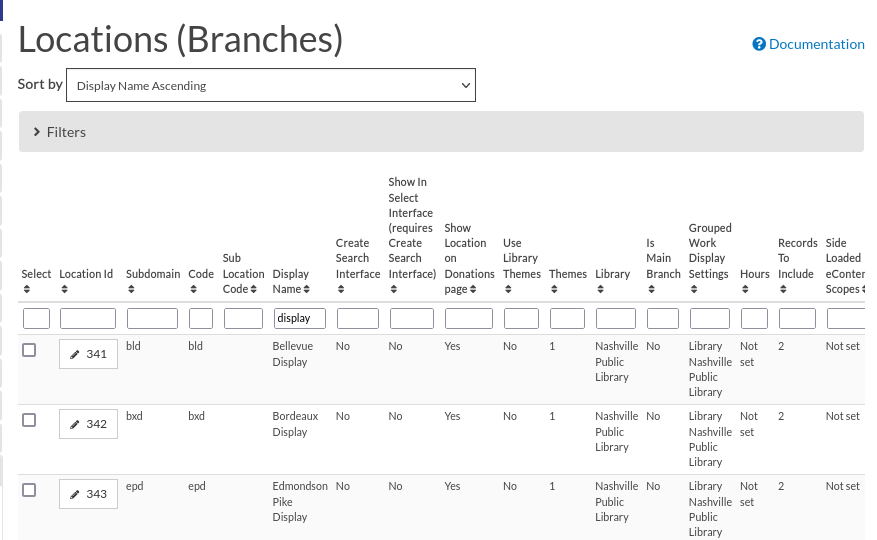
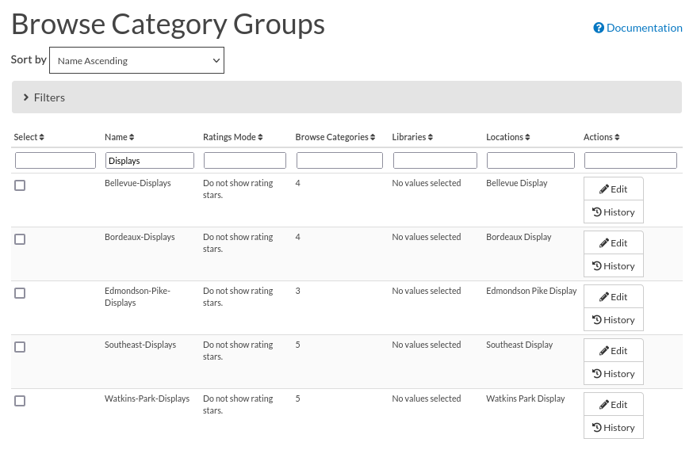
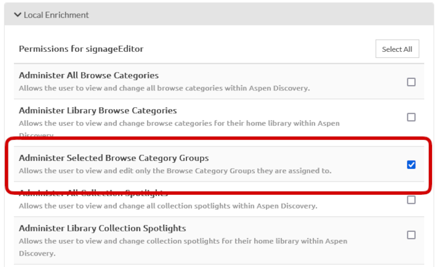
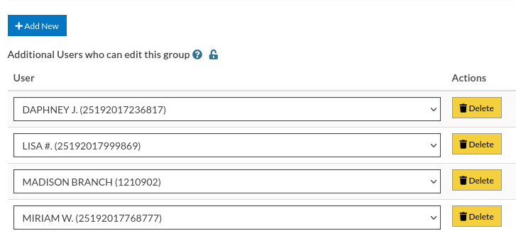

Bryan Neil Jones
Nashville Public Library


/* ================= GET RID OF POINTER ================= */
#content-container {
pointer-events: none;
}
/* ================= HIDE SCROLLBAR ================= */
body {
overflow-y: hidden
}
/* ================= HIDE BOTTOM ROW OF COVERS ================= */
/* Hides all covers after the 4th row,
so the 5th row of covers and all that follow */
#home-page-browse-results .browse-thumbnail:nth-of-type(1n+17) {
display: none;
}
/* ================= GET RID OF POINTER ================= */
#content-container {
pointer-events: none;
}
/* ================= HIDE SCROLLBAR ================= */
body {
overflow-y: hidden
}
/* ================= HIDE BOTTOM ROW OF COVERS ================= */
/* Hides all covers after the 4th row, so the 5th row of covers and all that follow */
#home-page-browse-results .browse-thumbnail:nth-of-type(1n+17) {
display: none;
}
/* ================= HIDE THE ARROWS ON BROWSE CATEGORIES ================= */
#browse-category-picker .jcarousel-control-prev, #browse-category-picker .jcarousel-control-next {
background-color: #000;
color: #000;
font-size: 0px;
display: none;
}
.jcarousel-control-prev, .jcarousel-control-next {
text-shadow: 0 0 0px #000;
box-shadow: 0px 0px 0px #000;
}
.col-sm-12, .col-md-12, .col-lg-12 {
position: relative;
min-height: 1px;
padding-left: 15px;
padding-right: 15px;
}
/* ================= HIDE THE ALERT BAR ================= */
div#system-message-header {
display: none;
}
/* ================= HIDE LANGUAGE SELECTOR ================= */
#language-selection-header {
display: none;
}
/* ================= HIDE THE MENU ================= */
div#horizontal-menu-bar-wrapper {
display: none;
}
/* ================= HIDE THE SEARCH CONTAINER ================= */
div#horizontal-search-container {
display: none;
}
/* ================= HIDE THE LOGO / BRANDING ================= */
div#header-logo-container {
display: none;
}
/* ================= HIDE THE PAGE TITLE ================= */
div#headerTextDiv {
display: none;
}
/* ================= HIDE THE FOOTER ================= */
div#footer-container {
display: none;
}
/* ================= STYLE THE PAGE ================= */
body {
background-color: #000;
}
body .container, #home-page-browse-content {
background-color: #000000;
color: #000000;
}
#home-page-browse-content {
background-color: #000;
padding: 0;
}
#header-wrapper {
background-color: black;
}
#home-page-browse-header {
background-color: #000000;
margin-bottom: 25px;
}
#selected-browse-label {
background-color: #000000;
}
#browse-sub-category-menu button.selected, #browse-sub-category-menu button.selected:hover {
border-color: #0087AB !important;
background-color: #97c6d3 !important;
color: #ffffff !important;
}
.btn-toolbar.pull-right {
display: none;
}
a#selected-browse-search-link {
color: #fff;
}
div#more-browse-results {
display: none;
}
#more-browse-results {
background-color: #000;
}
.glyphicon-chevron-down:before {
color: black;
}
a#js-top {
display: none!important;
}
/* ================= BROWSE CATEGORY STYLES ================= */
.browse-category {
font-size: 25px;
background-color: #000000 !important;
}
.browse-category div:hover {
text-decoration: none;
}
.browse-category.selected {
font-size: 25px;
}
.jcarousel li {
border: 3px solid #fff;
}
div#selected-browse-label {
display: none;
}
/* ================= Covers ================= */
.browse-thumbnail {
background-color: #000;
margin-bottom: 50px
}
.browse-thumbnail img {
box-shadow: 5px 5px 0px #ccc;
border: 1px solid #707070;
}
if (location.pathname == '/') {
var reloadURL = window.location.href;
var rotateTime = 20000;
var rotateCount = 0;
function rotateCategory()
function rotateCategory() {
var bccount = $('.jcarousel').jcarousel('items').length;
var nextCategory = null;
nextCategory = $('[data-category-id='+AspenDiscovery.Browse.curCategory+']').next().attr('data-category-id');
if (!nextCategory || rotateCount >= bccount - 1 ) {
window.location.href = reloadURL;
}
rotateCount++;
AspenDiscovery.Browse.changeBrowseCategory(nextCategory);
}
<script>
if (location.pathname == '/') {
var reloadURL = window.location.href;
var rotateTime = 20000;
var rotateCount = 0;
function rotateCategory() {
var bccount = $('.jcarousel').jcarousel('items').length;
var nextCategory = null;
nextCategory = $('[data-category-id='+AspenDiscovery.Browse.curCategory+']').next().attr('data-category-id');
if (!nextCategory || rotateCount >= bccount - 1 ) {
window.location.href = reloadURL;
}
rotateCount++;
AspenDiscovery.Browse.changeBrowseCategory(nextCategory);
}
setTimeout(
function waitForIt(){
if(typeof AspenDiscovery.Browse.curCategory !== "undefined"){
setInterval(rotateCategory,rotateTime)
}else{
setTimeout(waitForIt,250)
}
},750);
}
</script>

